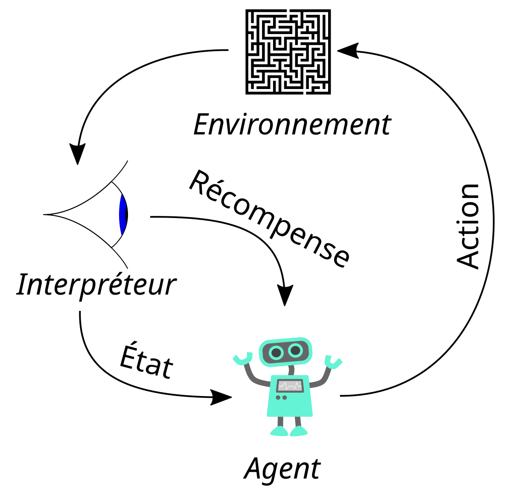
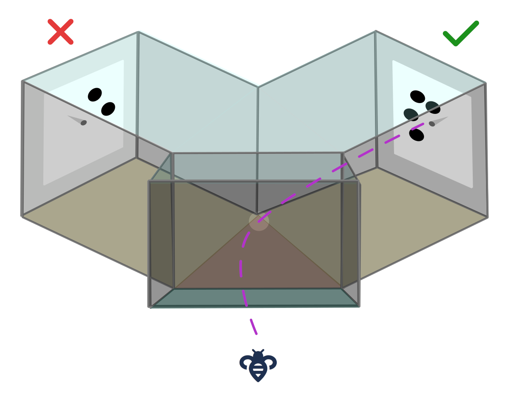
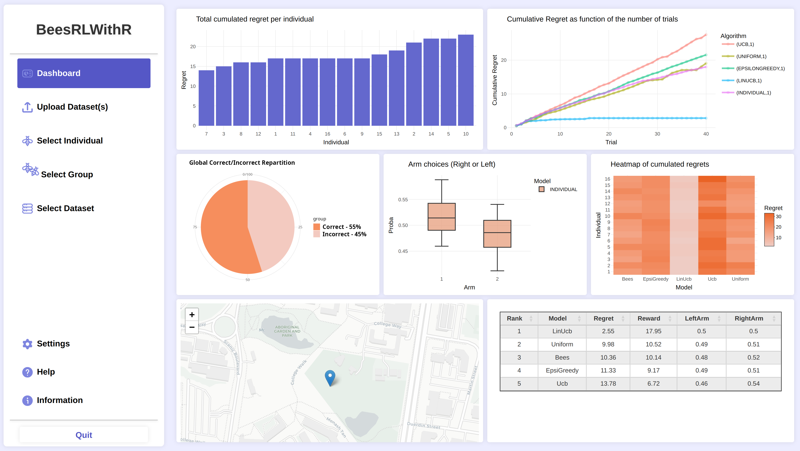
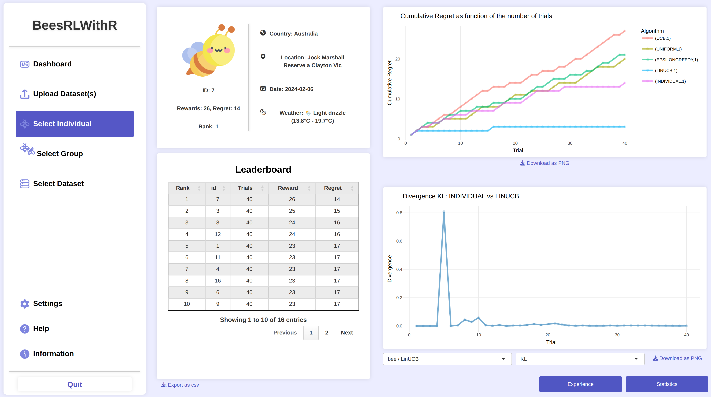

In this section, I quickly present the followed courses during both my Bachelor's degree and my engineering cursus at ENSEEIHT. Below, you will find a brief description for each one of my most interesting personnal and academic projects!
Bachelor's Degree courses content
Software Development Methodology / Software Engineering
- > Verification, complexity analysis, security
- > Data structures, abstract types
- > Object-oriented programming, validation, testing
Computer Architecture and Environment
- > Machine architecture
- > Computer networks
- > Operating systems
Programming Languages
- > Python, C, Java, OCamL, SQL, Assembly ARMv7, R, JavaScript
Discrete Structures and Algorithms
- > Algorithms, logic, information theory, language theory, graph theory and algorithms, cryptography, probability/statistics, arithmetic, linear algebra, numerical methods
Other
- > Databases, Human-Computer Interaction, Artificial Intelligence, Computer Graphics, Parallel Programming
- > Project Management Techniques and Collaborative Tools
Engineering Degree courses
Architecture, Systems and Networks - Semester 7
- > Functional Programming and Language Translation
- > Computer Architecture
- > Local and Telecommunications Networks
- > Internet and Graph Theory
- > Concurrent and Communicating Systems
- > Soft and Human Skills
Architecture, Systems and Networks - Semester 8
- > Concurrent and Communicating Applications, Databases
- > Network Science and Learning
- > Network Interconnections and Modeling
- > Wireless and Mobile Telecommunications Systems
- > Operating Systems Architecture
- > Soft and Human Skills
Projects
Chess
Chess Engine in Java.
Implements move generation and rules using Magic Bitboards and Zobrist Hashing.
Includes CLI and GUI version compatibles with UCI protocol.
An effort has been made towards reaching optimal time and memory complexity (branchless instructions, bitwise operations), allowing the application to compete with average C++ equivalent projects.
Cryptography
Cryptography software in C.
Development of a cybersecurity offensive command-line application in team, allowing to crack secret encryption keys using dictionnary smart attacks, one-time pad vulnerabilities as well as frequency analysis.
Includes various personalised and optimised data structures, exhaustive tests in shell and python.
Deep Learning
Neural Network in Java.
Development of a multi-layers and fully connected neural network from scratch, trained to learn numbers from the MNIST dataset.
Supports multiples activation functions.
Implements an optimizer and the batch gradient descent.
Is highly modulable and can be ported to C / CUDA.
Reinforcment Learning
Dashboard application in R
Conception of a web-style heavy client in R for my bachelor's internship at IRIT, in collaboration with the CBI (Center in Integrative Biology).
Study and implementation of many RL algorithms (Ucb, LinUcb, Epsilon Greedy, Q-Learning, ...) for the study of bees' behavior and their learning capacities.
The application also gives an analysis through multiples charts, graphics, tables, leaderboards.
Processor Conception
Conception of a fonctional processor for ARMv7 (32 bits).
Wiring in Logisim. Implementation of every component and mecanism from scratch:
UAL - Register file - Instruction Decoder and management of NZCV flags, memory, program counter.
Correct execution of basic instructions (MOV, ADD, SUB, LOAD, STORE, ...)
I am currently developing back this processor in VHDL for embedded systems (FPGA)
Machine Learning
Hackaton on football match previsions in Python.
Pre-processing and analysis of a large amount of real data given for the event.
Development of several ML models - Random Forests, Classification and Decision Trees, Clustering (K-Means, HCA), Neural Networks, Vote System.
I finished first of my promotion and had a good world ranking.
> Internship: Study of Honeybee Decision-Making
Reinforcement Learning & Multi-Armed Bandit
Intro
My L3 internship at IRIT (Institut de Recherche en Informatique de Toulouse) focused on studying the honeybee decision-making process through Reinforcement Learning algorithms, specifically Multi-Armed Bandit (MAB) models.
The objective was to provide a web-based dashboard application for the Center in Integrative Biology to visualize data and analyze how bees solve sequential learning problems compared to optimal AI strategies.

The MAB Problem
In the Multi-Armed Bandit problem, an agent must iteratively select actions to maximize rewards while minimizing "regret". This involves a constant balance between Exploration (testing new options) and Exploitation (choosing the best-known option).
For this project, bees enter a Y-maze and land on visual stimuli. Depending on their choice, they receive a reward (sugar) or a punishment (bitter substance).

Technical Realization
I developed an interactive dashboard using R and CSS. It supports data processing and provides advanced visualizations (pie charts, line charts, boxplots) to track reward and regret metrics.
I implemented Kullback-Leibler divergence and Wasserstein distance metrics to provide intuition into the probabilistic strategies adopted by individual bees.
Challenges & Learning: Throughout this project, I withstood many difficulties. I had to study the mathematical concepts of Reinforcement Learning, learn the R programming language and understand the biological experiment behind the collected data.

Dashboard: Behavioral data visualization

Comparative analysis: MAB Models vs Honeybees